Ajustes y actualizacionesSettings and updates
Arranque con el sistema, modelo predeterminado, archivos, historial y actualizaciones.Launch at sign-in, default model, files, history and updates.
Paso a pasoStep by step
- Activa el arranque con el sistema: Tramtai se abre oculto en la bandeja al iniciar sesión.Turn on start with the system: Tramtai opens hidden in the tray when you sign in.
- Elige el modelo y el esfuerzo que se usan cuando una petición no los dice.Pick the model and effort used when a request does not say.
- En Historial decide cuánto se guardan las peticiones; en Archivos, prepara el conversor.In History decide how long requests are kept; in Files, prepare the converter.
Qué verás en pantallaWhat you will see on screen
- Dos grupos de ajustesTwo groups of settings Las pestañas separan lo de este espacio (modelo, historial, datos) de lo de todo Tramtai (puerto, conversor, actualizaciones, arranque).The tabs separate what belongs to this workspace (model, history, data) from what belongs to all of Tramtai (port, converter, updates, start with the system).
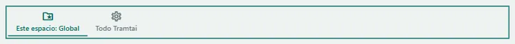
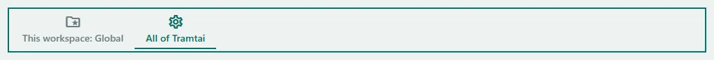
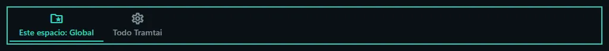
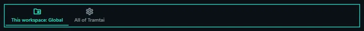
- Modelo predeterminadoDefault model Aquí eliges el modelo y el esfuerzo que se usan cuando una petición no dice cuál quiere.Here you pick the model and effort used when a request does not say which one it wants.
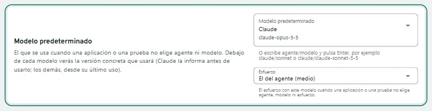
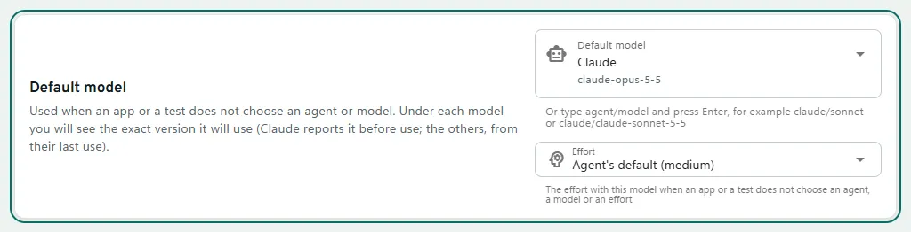
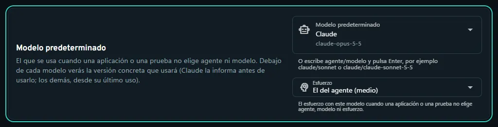
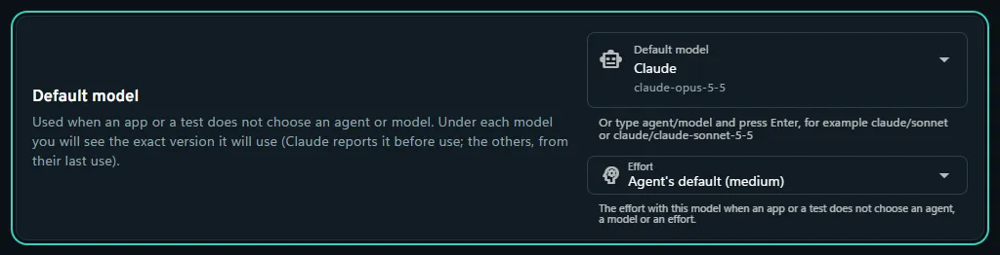
- Borrar datosDelete data Aquí borras el historial o las APIs de este espacio. Antes te pide confirmar, y los ajustes no se tocan.Here you delete this workspace’s history or APIs. It asks you to confirm first, and your settings are not touched.
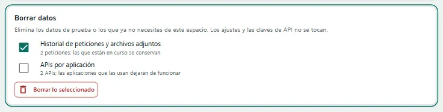
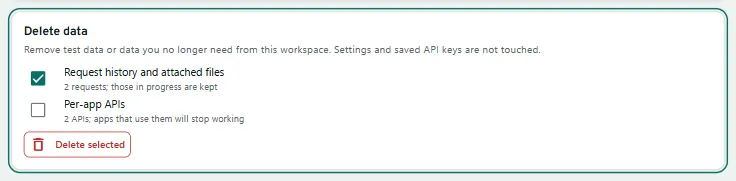
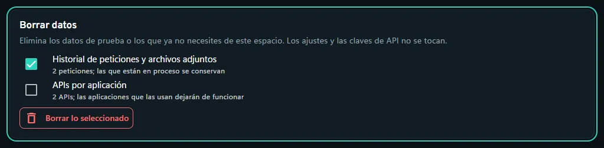
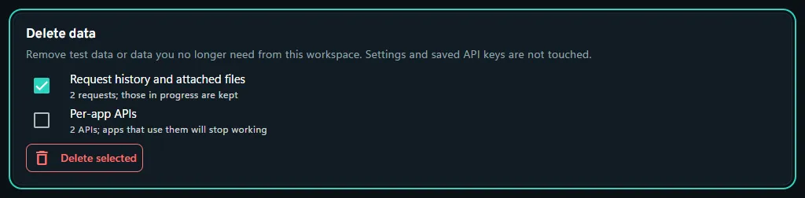
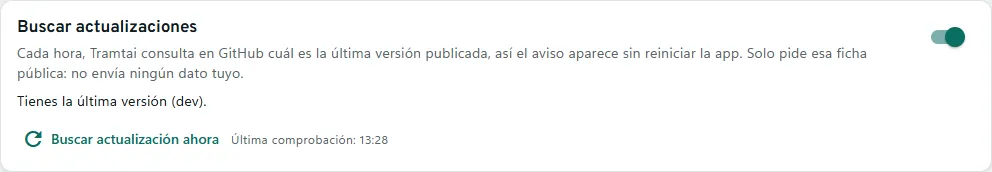
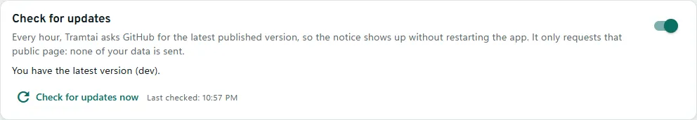
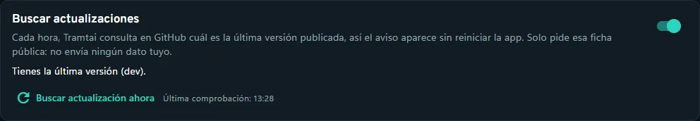
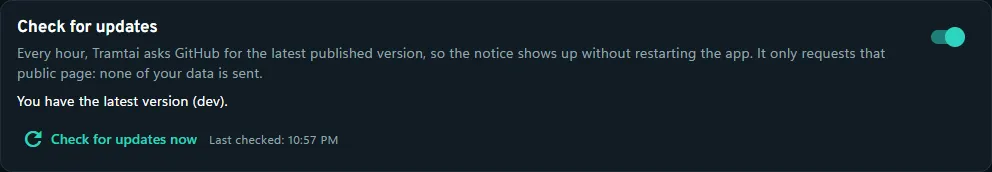
PreguntasQuestions
¿Qué pasa al actualizar?What happens when I update?
El aviso muestra lo que trae cada versión. Con el instalador de Windows se instala sola y la app se reabre con tus datos; en lo demás, el aviso trae el enlace.The notice shows what each version brings. With the Windows installer it installs itself and the app reopens with your data; otherwise, the notice has the link.
¿Cómo actualizo sin el instalador de Windows?How do I update without the Windows installer?
Homebrew: «brew upgrade». El .dmg, .deb, .rpm y la portable: el paquete nuevo encima. En la terminal, «tramtai actualizar» («--comprobar» solo mira).Homebrew: “brew upgrade”. The .dmg, .deb, .rpm and portable: the new package on top. In the terminal, “tramtai actualizar” (“--comprobar” only checks).
¿Puedo buscar una versión ahora?Can I check for a version now?
Sí: «Buscar actualización ahora» en Ajustes. Tramtai mira cada hora (solo la ficha pública de GitHub); se desactiva en Ajustes → Buscar actualizaciones.Yes: “Check for updates now” in Settings. Tramtai checks every hour (only GitHub’s public page); turn it off in Settings → Check for updates.
¿Qué versión tengo?Which version do I have?
Abre «Acerca de Tramtai» en el menú lateral o en la bandeja; «Copiar datos para soporte» copia lo necesario sin claves.Open “About Tramtai” in the side menu or the tray; “Copy support details” copies what is needed, without keys.
¿Dónde se guardan mis datos?Where is my data kept?
Solo en este equipo: %APPDATA%\tramtai (Windows), ~/Library/Application Support/tramtai (macOS) o ~/.config/tramtai (Linux); la portable, en «datos-tramtai».Only on this computer: %APPDATA%\tramtai (Windows), ~/Library/Application Support/tramtai (macOS) or ~/.config/tramtai (Linux); the portable, in “datos-tramtai”.
¿Puedo volver a una versión anterior?Can I go back to an earlier version?
Si ya abriste la v0.56, la v0.55 o una anterior no abre tus espacios: dice que la base de datos no es compatible. No se borra nada; con la v0.56 o una posterior todo sigue ahí.Once you’ve run v0.56, v0.55 or earlier won’t open your workspaces: it says the database isn’t supported. Nothing is deleted; with v0.56 or later everything is still there.
¿Cuánto tiempo se guardan?How long is it kept?
Las respuestas, 24 horas; el resto del historial, 7 días, hasta 10.000 peticiones. Se cambia en Ajustes → Historial, donde también puedes borrarlo.Responses, 24 hours; the rest of the history, 7 days, up to 10,000 requests. Change it in Settings → History, where you can also delete it.
¿Qué es «Este espacio» y qué «Todo Tramtai»?What are “This workspace” and “All of Tramtai”?
«Este espacio» guarda el modelo, el historial y los datos del espacio abierto; «Todo Tramtai», el puerto, el conversor, las actualizaciones y el arranque.“This workspace” keeps the model, history and data of the open workspace; “All of Tramtai”, the port, converter, updates and startup. Espacios de trabajoWorkspaces →
En la terminal: 7 abre Ajustes. ← → pasa de este espacio a todo Tramtai, ↑↓ elige la sección y el pie dice qué tecla la cambia.In the terminal: 7 opens Settings. ← → switches between this workspace and all of Tramtai, ↑↓ picks the section and the footer shows which key changes it.